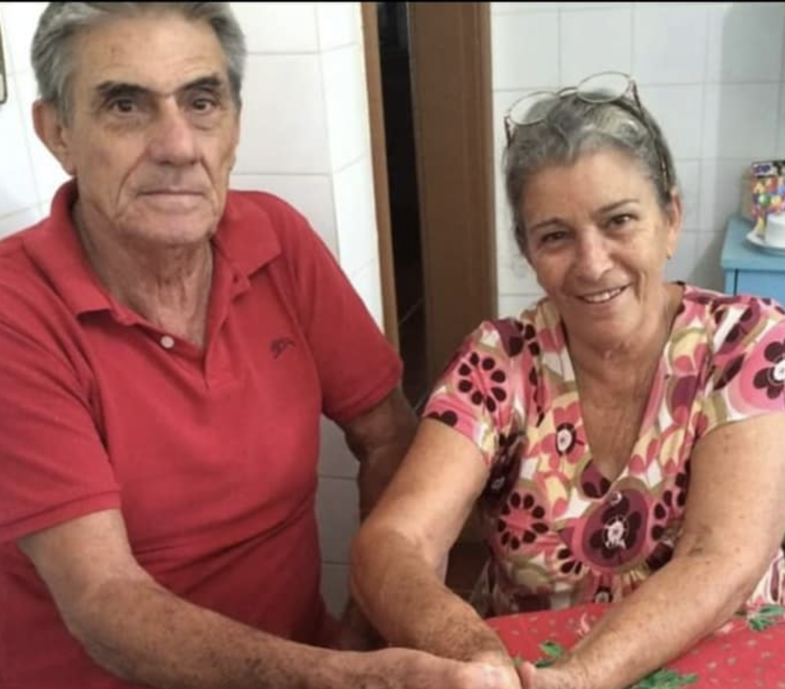
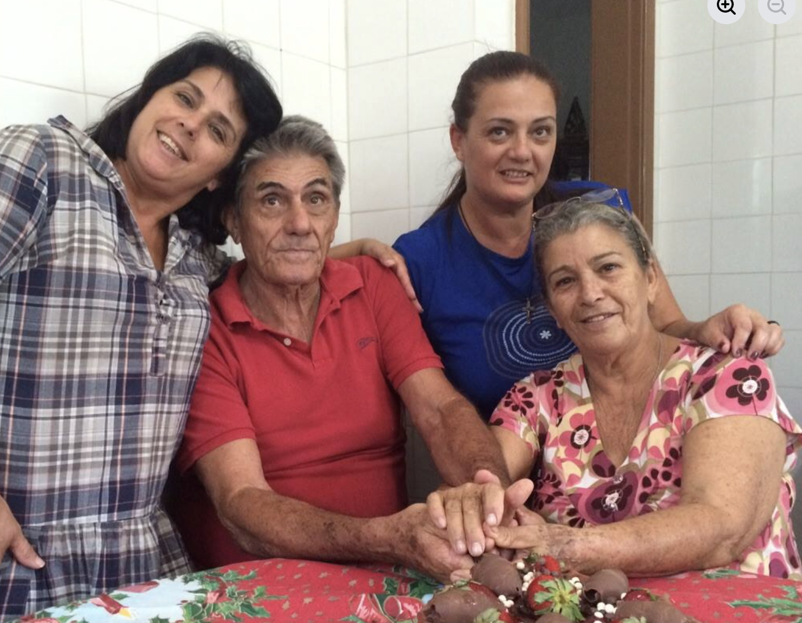
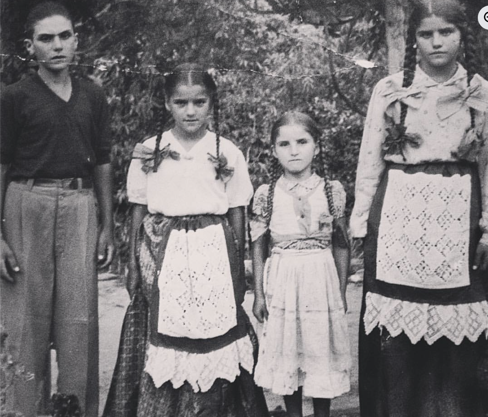
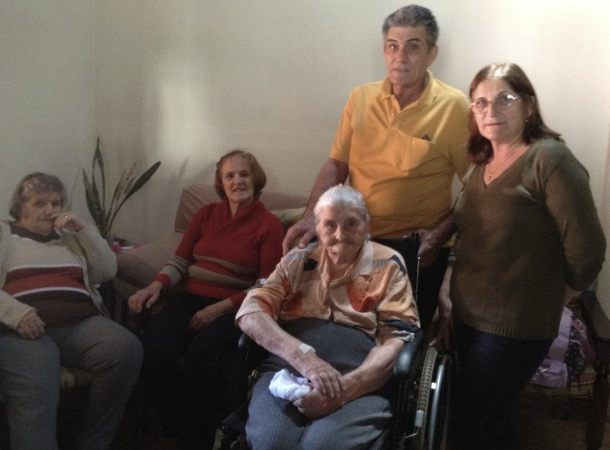
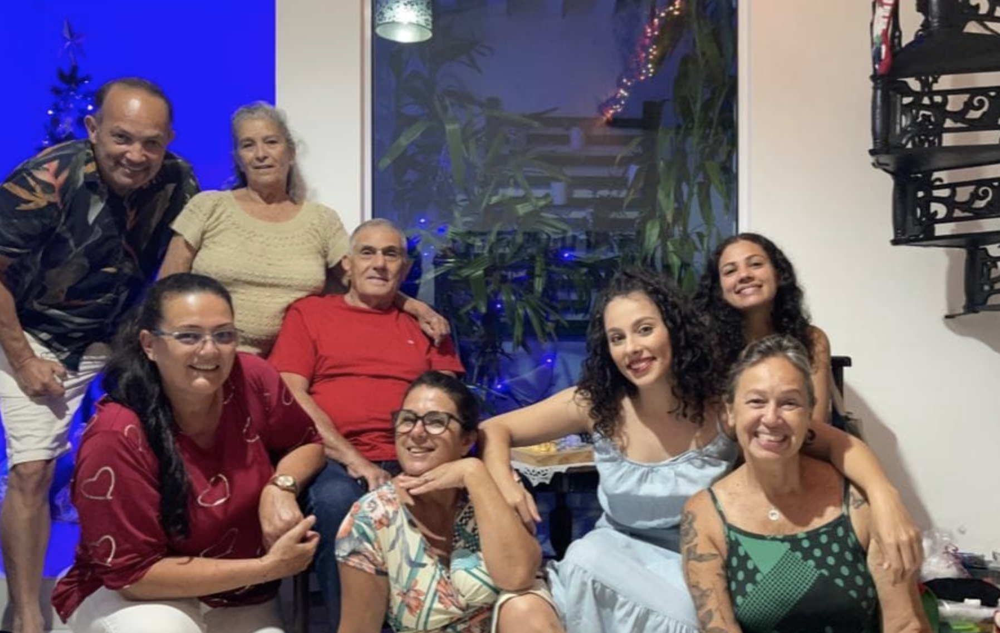
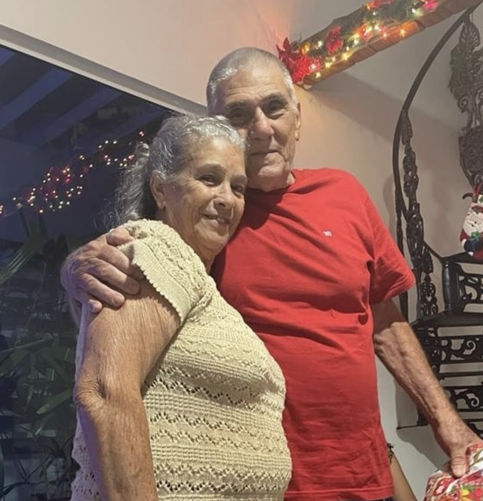
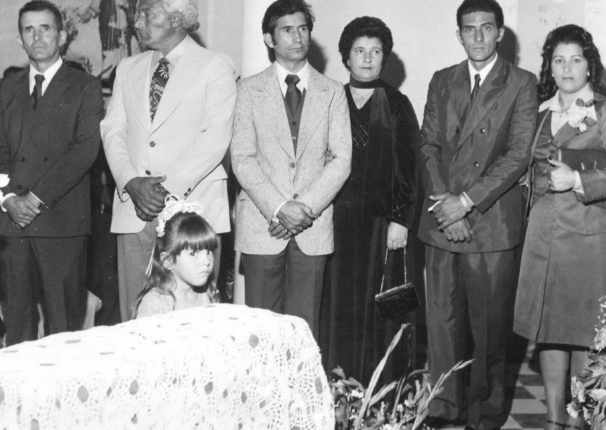

Celebrar 85 anos é celebrar uma vida inteira de histórias, aprendizados e afetos. Valter construiu, ao longo do tempo, um caminho marcado por dedicação, generosidade e presença — daquelas que fazem diferença na vida de todos ao redor. Neste dia, queremos reunir família e amigos para homenagear não apenas os anos vividos, mas tudo o que foi semeado ao longo deles.
Será uma alegria ter você conosco para celebrar esse momento tão especial.
Data: 25/07/2026
Horário: 13h
Local: Spazio São José - Saquarema/RJ
Em julho, Saquarema costuma ter temperaturas agradáveis, com clima ameno e céu aberto — perfeito para aproveitar uma tarde especial ao lado de pessoas queridas.
Aqui você pode adicionar um texto contando mais sobre a celebração, o significado da data e o quanto esse momento é especial.






